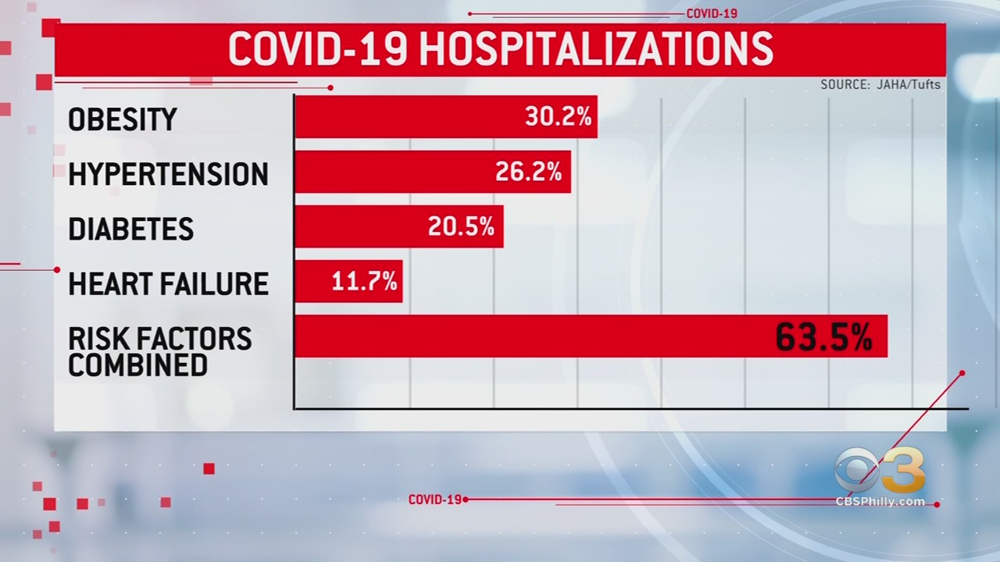
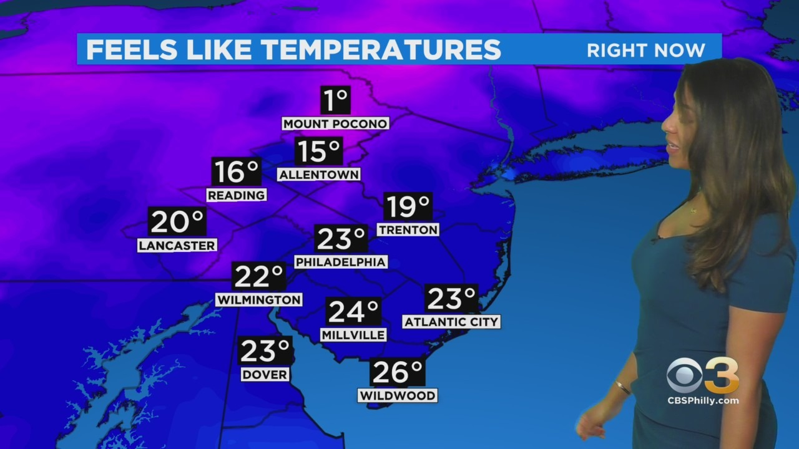

New Research Finds Obesity Is One Of Biggest Risk Factors For COVID-19 Patients
PHILADELPHIA (CBS) — New research confirms obesity is one of the biggest risk factors for COVID-19 patients.The CDC says people who are obese should get the COVID vaccine because the condition increases the risk for complications, but not all states are following that recommendation and have different timelines.
'We have delivered a total of 2,671,480 vaccine doses into people’s arms,' New Jersey Gov.Phil Murphy said.
READ MORE:
New Jersey will expand COVID vaccine eligibility to people who are overweight on Monday.
Those with a higher body mass index, considered obese, had already been qualified in New Jersey and Pennsylvania, but not in Delaware.
'People who are obese and get COVID-19 have much worse outcomes,' Dr. Dariush Mozaffarian said.
READ MORE:
A CDC study of more than 71,000 hospitalized COVID patients finds nearly 51% were obese and 28% were overweight.About 65% of the population in Philadelphia is considered obese, one reason why severe COVID rates are so high in the city with thousands hospitalized.
Obesity is responsible for most COVID hospital cases followed by hypertension, diabetes, and heart failure.
'COVID-19 is like pouring gasoline on a fire when you have those underlying conditions because it attacks not only the lungs but attacks the blood vessels and it causes inflammation throughout the body,' Mozaffarian said.
People who are obese have been prioritized for the vaccine by the CDC.It’s considered a high-risk medical condition, along with things like lung disease and cancer.
MORE NEWS:
Experts say inflammation caused by excess weight disrupts the immune response to COVID, increasing the risk for severe reactions.
Posted On: 2021-03-11T17:46:00
Posted By: Stephanie Stahl



Content Date: 2021-03-11
Download Date: 2021-04-08
Document ID: L0C049HK3